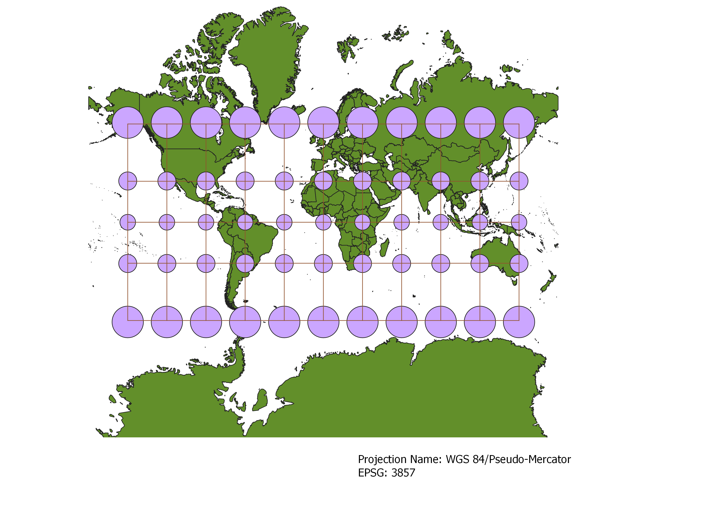
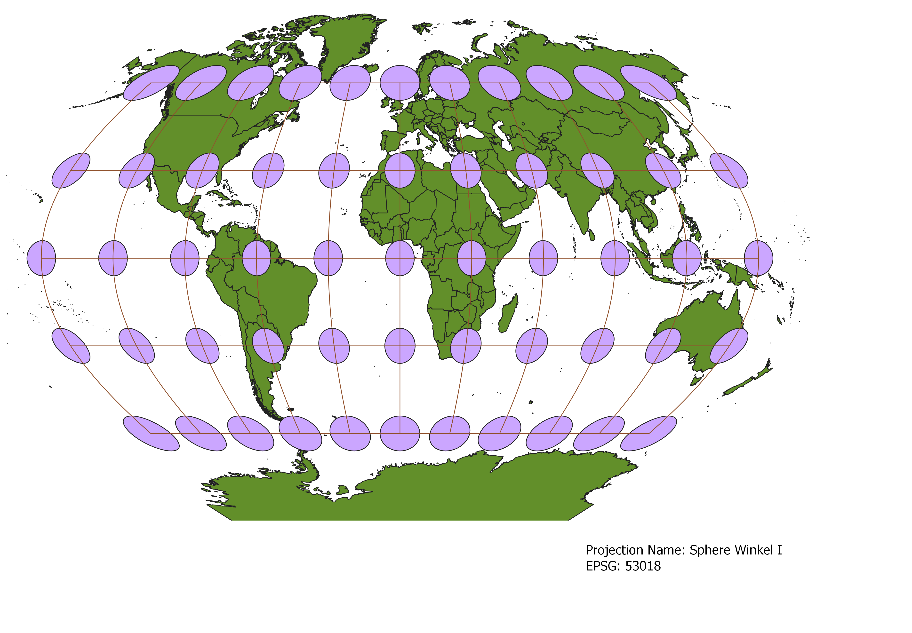
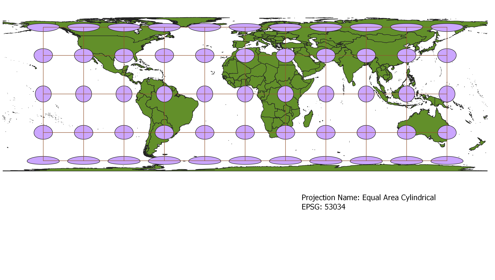

In this project I learned how to display images in different projections
Describe in your own words how you displayed the map in different projections using QGIS
WGS84 Projection
Some observations

Aitoff Projection
Some observations

Now, you should add the following projections on your own:
EPSG: 3857, 53018, 54034, 54027, 102016, and two additional projections that you choose.
Pseudo-Mercator Projection
Some observations

Winkel I
Some observations

Equal Area Cylindrical
Some observations

Data used for this project
Download Natrual Earth 1:10m Cultural Vector